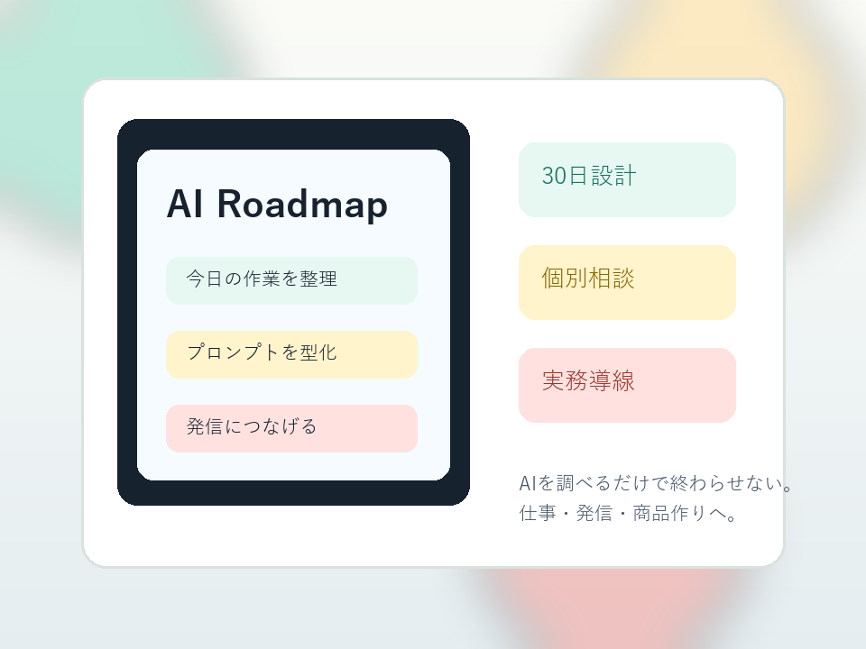

何から始めるべきか分からない
ChatGPT、Gemini、Claude。選択肢が多すぎて、最初の一歩が止まりやすくなります。
AI初心者のための30日実践ロードマップ
AI Starter Labは、会社員・フリーランスが仕事効率化、発信、商品作りにAIを使うための最初の設計を一緒に作る実践サポートです。

Problem
ツールの名前は知っている。動画も見ている。でも、自分の仕事にどう使えばいいか分からない。その状態のまま情報だけが増えると、AI活用は続きません。
ChatGPT、Gemini、Claude。選択肢が多すぎて、最初の一歩が止まりやすくなります。
毎回その場で聞き方を考えるため、成果が安定せず、仕事に組み込みにくくなります。
効率化だけで終わり、自分のメディアやサービス作りまで進みにくい状態です。
Solution
あなたの仕事、時間、目標に合わせて、30日で試せるAI活用ロードマップを作ります。小さな作業整理から始めて、発信や商品作りにつなげます。
Service
毎日の作業を整理し、AIに任せやすいタスクと人が判断すべきタスクを分けます。
メール、資料、調査、発信など、あなたの仕事に合わせた実用プロンプトを作ります。
AIで効率化した時間を、YouTube、ブログ、講座、サービス作りへつなげます。
Reason
目指すのは、AIを触った満足ではなく、あなたの仕事と発信が実際に変わることです。
Roadmap
Voice
正式な実績が入るまでの仮文です。公開時は実際の許諾済みコメントに差し替えてください。
仮: AIを何に使えばいいか分からなかったのですが、まず作業整理から始める流れが分かりました。
会社員・30代
仮: 発信のネタ出しから投稿文まで、毎週の作業に落とし込めるようになりました。
フリーランス・40代
Price
0円 30分 / オンライン
あなたの仕事、発信、目標を聞いたうえで、AI活用の最初の一歩を提案します。
FAQ
大丈夫です。ツールの細かい比較よりも、まず仕事で使う場面を整理するところから始めます。
目的に応じて選びます。特定ツールありきではなく、仕事に合う使い方を優先します。
問題ありません。初回は現状整理と方向性の提案を中心に行います。
成果の保証はしていません。実行しやすい設計と改善の仕組みづくりを支援します。
Contact
入力内容は相談対応のために使用します。送信先は仮設定です。